Hoe maak je een interactieve website met JavaScript?
Wat is HTML? HTML staat voor HyperText Markup Language. Dit wordt gebruikt om
de structuur en inhoud van een webpagina te definiëren. HTML werkt met tags: speciale labels die aan de
browser vertellen hoe de inhoud eruit moet zien. Elke tag heeft een eigen functie. De tag <h1> creëert
bijvoorbeeld een grote titel. Je opent een tag met <h1> en sluit deze af met </h1>. De inhoud
die je wilt weergeven plaats je ertussenin (bijv. "Game Tutorial"). Er zijn veel verschillende tags:
<div> voor containers, <p> voor alinea's, <a> voor links, en nog veel meer. HTML is de
basis van elke website.
Wat is CSS? CSS staat voor Cascading Style Sheets. Dit wordt gebruikt om de
stijl en lay-out van een webpagina te bepalen. Met CSS pas je kleuren, lettertypen, afstanden en nog veel
meer aan. CSS werkt met selectors: je kiest welke HTML-elementen je wilt stylen, en voegt vervolgens
stijlregels toe. Je kunt CSS in een apart bestand plaatsen of direct in de HTML-code schrijven. CSS is
essentieel voor een aantrekkelijke en gebruiksvriendelijke website.
Wat is JavaScript? JavaScript is een programmeertaal die wordt gebruikt om
interactieve elementen aan een
webpagina toe te voegen. Met JavaScript kun je dingen doen zoals het reageren op gebruikersinvoer, het
manipuleren van de inhoud van een webpagina, en nog veel meer. JavaScript werkt door middel van functies,
waarmee je specifieke taken kunt uitvoeren. Je kunt JavaScript in een apart bestand plaatsen of direct in de
HTML-code schrijven. JavaScript is essentieel om een dynamische en interactieve website te maken.
Je hoeft geen voorkennis te hebben om deze tutorial te kunnen voltooien.
Stap 1: Project opzetten
Om dit project te starten, moet je een nieuwe map aanmaken op je computer. Geef deze map een duidelijke naam,
zoals "game-tutorial". Vervolgens kun je een nieuw bestand aanmaken met de naam "index.html". Dit is het
bestand waarin je je HTML-code zal schrijven.
Hierna open je dit project in een code editor zoals Visual Studio Code. Dit doe je door
Visual Studio Code te openen en te klikken op Open Folder.
Navigeer naar de locatie waar je je projectmap hebt aangemaakt, selecteer deze en klik rechtonder op Open.
Nu zie je het project in de bestandsverkenner van visual studio code. Hier kunnen we dan het begin HTML
bestand aanmaken. Dit doe je door rechts te klikken op de map en "New File"
te kiezen.
Dit nieuw bestand geef je dan de naam "index.html"
Waarom index.html? Index.html word standaard gebruikt als startpagina van een
website en de .html extensie
zorgt ervoor dat de browser weet dat het om HTML-code gaat.
Als dit nu allemaal gelukt is dan zou je het volgende moeten zien:
Voordat we beginnen moeten we nog een extensie installeren. Deze zorgt ervoor dat de pagina live ververst in
je browser. Dit doe je door links in Visual Studio Code op het extensie-icoon te klikken (vier vierkantjes).
Zoek vervolgens naar "Live Server" en installeer deze.
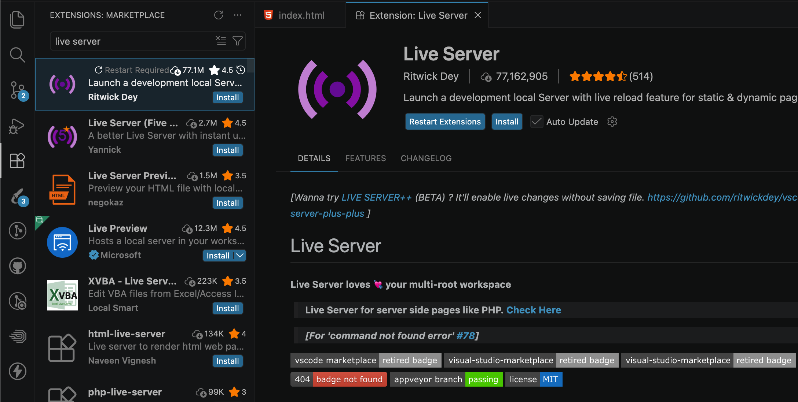
Stap 2: HTML structuur maken
Nu we ons project hebben opgezet, kunnen we beginnen met het schrijven van onze HTML-code. We beginnen
met
het
toevoegen van de basisstructuur van een HTML-document. Dit doe je door de volgende code in je index.html
bestand te plakken:
Wat betekent dit? De <html> tag is het startpunt van je pagina. In de
<head> plaats je onzichtbare instellingen, zoals de <meta> charset (voor speciale tekens) en
<title> (de naam die in de browser-tab staat). Alles wat je op het scherm wilt zien plaats je tussen
de <body> tags.
Als alles goed is gegaan ziet je visual studio code er als volgt uit:
Stap 3: Pagina openen in de browser
Nu we de Live Server extensie hebben geïnstalleerd, kunnen we deze gebruiken om onze pagina te openen. Klik
met de rechtermuisknop ergens in je index.html bestand (of op het bestand in het linkermenu) en kies voor
"Open with Live Server".
Als dit is gelukt zou je een witte pagina moeten zien met als titel "Tutorial
Game".
Stap 4: De HTML toevoegen
Nu gaan we beginnen met het toevoegen van HTML code voor de wordle game dat we gaan maken.
Binnen de <body> tags voeg je de HTML toe die je wilt gebruiken voor je game. hier gaan we beginnen
met
een titel toe te voegen aan deze pagina
class="title">
<h1>
WORDLE GAME
</h1>
</section>
Dit zou er nu zo uit moeten zien in visual studio code:
En als je dan terug naar de eerder geopende browser tab gaat en deze herlaad zou je dit moeten zien:
Wat betekent dit? De <section> tag is een container voor een bepaald
deel van je pagina. De <h1> tag creëert de hoofdtitel. Let op: <h1> mag slechts één keer per
pagina voorkomen. Daarna gebruik je <h2>, <h3>, enzovoort. Het attribuut class="title" is een label dat we later gebruiken voor styling. De tekst
"WORDLE GAME" plaatsen we tussen de <h1> tags.
Nu voegen we tekstvakken toe waar spelers letters kunnen invoeren. Dit doen we met de <input> tag.
Dit ziet er ingewikkeld uit, maar het is eigenlijk steeds hetzelfde patroon. We hebben een <section>
met daarin 6 <div> elementen (voor 6 pogingen). Elk <div> bevat 6 <input> velden (voor 6
letters per woord). In totaal hebben we dus 36 input velden. Het belangrijkste is dat je het patroon
begrijpt: elke poging is één rij met zes velden.
Hoe werken deze input velden? Elk input veld heeft verschillende
instellingen:
type="text" — Dit zorgt ervoor dat je tekst kunt typen (niet nummers of
iets anders).
inputmode="char" — Dit vertelt mobiele apparaten dat je individuele
karakters invoert.
maxlength="1" — Dit zorgt dat slechts 1 karakter in elk veld past.
autocomplete="off" — Dit voorkomt dat je browser eerdere invoer
voorstelft.
Plak deze code in je index.html onder de eerder gemaakte <section>. Je index.html zou er nu zo uit
moeten zien:
En als je dan terug naar de eerder geopende browser tab gaat en deze herlaad zou je dit moeten zien:
Stap 5: De CSS toevoegen
Nu gaan we beginnen aan het toevoegen van CSS styling aan onze game. Hiervoor gaan we eerst een apart
bestand aanmaken. Dit doen we zoals daarnet bij de index.html maar nu voor css.
Dit doe je dus door rechtermuisklik te maken op de map waarin je je project hebt aangemaakt en then "New
File" te kiezen.
Dit bestand geven we de naam "style.css".
Dan klikken we op "Enter" om het bestand te maken. Eenmaal dat dit bestand gemaakt is moeten we dit nog
linken met de onze index.html. Dit doen we in de <head> tag van de index.html.
Daar voegen we een <link> tag toe met de href attribute ingesteld op "style.css" en zorgen we dat
het
pad correct ingesteld is. Omdat we hier geen complexe paden gebruiken, is het eenvoudig om het pad
correct
in te stellen en dienen we alleen bij de href attribute style.css te zetten (maar stel we hadden meer
mappen
kon dit moeilijker zijn)
="stylesheet" href="style.css">
Indien we deze code kopieren is er visueel niks veranderd maar zodra we styling toevoegen gaat dit wel
werken.
Als alles is gelukt ziet de head tag er nu zo uit:
Voordat we kunnen beginnen met het stylen van de titel moeten we eerst het lettertype inladen dit kan op
2
manieren. Ofwel kies je om dit lettertype te downloaden en lokaal te gebruiken, ofwel kies je om het
lettertype
te laden vanaf een externe bron. Wij kiezen de tweede optie. Hiervoor gebruiken we google fonts. Om het
op
deze manier te doen moeten we een link toevoegen aan de head tag van onze index.html.
Plak deze links in de <head> van je index.html. Visueel verandert er nog niets, maar het lettertype is
nu beschikbaar:
Nu voegen we CSS styling toe. We beginnen met het centreren van de titel, deze groter maken, ruimte aan de
onderkant toevoegen en het lettertype gebruiken dat we net hebben ingeladen.
font-family — Stelt het lettertype in. We gebruiken "Smooch Sans" met
"sans-serif" als terugval.
font-size — Bepaalt de grootte (2.5rem is een proportionele eenheid).
text-align: center — Centreert de titel horizontaal.
margin-bottom — Voegt ruimte toe onder de titel.
Als we deze code nu kopieren en plakken in onze style.css ziet het bestand er zo uit:
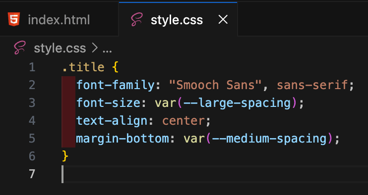
Als dit juist is en we openen de browser en herladen deze zullen we zien dat de titel nu groter, centraal
en
met een nieuw lettertype is.
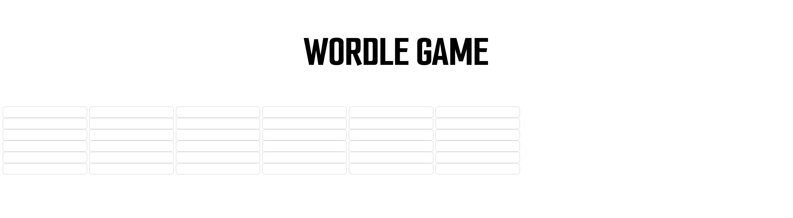
Nu komen we aan bij de styling van de input velden. Hierbij gaan we zorgen dat het mooier rechthoekige
vakjes
zijn waar je automatisch grote letters typt.
De eerste 5 eigenschappen centreren de game op de pagina. De overige eigenschappen bepalen de stijl: rand,
achtergrondkleur, hoeken en schaduw.
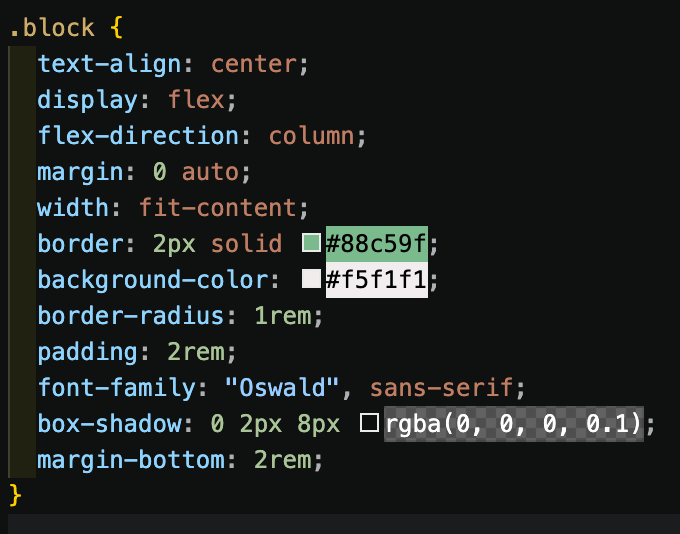
Als je deze code nu in je style.css plaatst, ziet het bestand er zo uit:
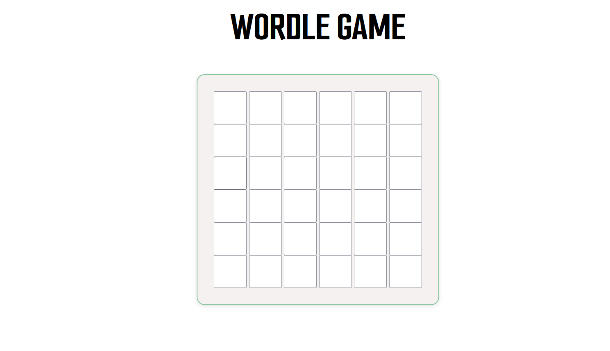
Stap 6: functionaliteit: JavaScript
nu gaan we de functionaliteit toevoegen met JavaScript.
om te beginnen moeten we een nieuw bestand aanmaken voor onze JavaScript code. Dit doen we op dezelfde
manier als bij de index.html en style.css maar nu geven we het bestand de naam
"script.js".
Als dit bestand is aangemaakt moet je het linken in je index.html. Voeg deze <script> tag toe helemaal
onderin je <body>:
pt src="js/game.js"></script>
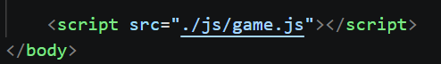
We plaatsen deze <script> helemaal onderaan zodat eerst de HTML laadt voordat JavaScript wordt
uitgevoerd.
We beginnen door al onze eerder gemaakte input velden in te laden. Voeg deze code toe aan je game.js:
Als je dit dan toegevoegd hebt ziet je script.js er als volgt uit:
Zo kunnen we in JavaScript naar alle input velden verwijzen en controleren welke letters juist zijn.
De interactie met de velden
De 3 Event Listeners Uitgelegd
Event listeners zijn "wachters" die op bepaalde acties wachten (zoals klikken of typen) en daar dan op
reageren.
1. keydown listener - Luistert wanneer je toetsen indrukt
orEach((input, i) => {
input.addEventListener('keydown', e => {
if (input.disabled) return;
if (e.key === 'Backspace') {
if (input.value) { input.value = ''; }
else if (i > 0) { inputs[i - 1].focus(); inputs[i - 1].value = ''; }
e.preventDefault();
}
if (e.key === 'ArrowLeft' && i > 0) inputs[i - 1].focus();
if (e.key === 'ArrowRight' && i < inputs.length - 1) inputs[i + 1].focus();
});
});
Voeg deze code toe onder je eerdere `const inputs` regel.
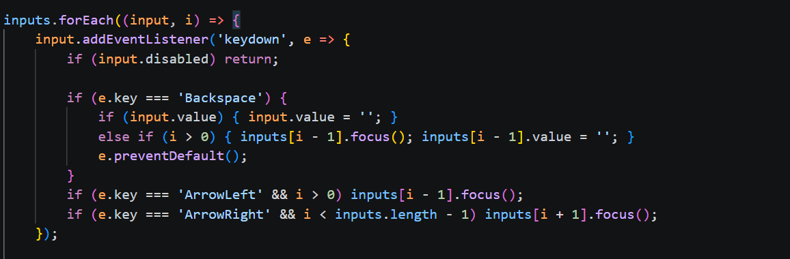
Wat het doet deze code?
'Backspace': Verwijdert de huidige letter. Als het vakje leeg is, gaat het terug naar het
vorige
vakje en verwijdert die letter.
'ArrowLeft': Gaat naar het vorige vakje (zoals naar achteren gaan).
'ArrowRight': Gaat naar het volgende vakje (zoals naar voren gaan).
Real-world voorbeeld: Alsof een leraar kijkt welke toetsen je indrukt en daar op reageert.
2. input listener - Luistert wanneer je een letter typt
Wat het doet:
Staat alleen letters toe (geen nummers of symbolen).
Gaat automatisch naar het volgende vakje als je een letter typt.
Controleert of de rij compleet is (alle 6 vakjes ingevuld).
Als de rij compleet is, controleert het of je gok correct is en gaat naar de volgende rij
vakjes.
Real-world voorbeeld: Alsof een helper je werk controleert zodra je elke regel afmaakt.
maar voor we dit doen moeten we eerst 2 funties schrijven, dit zijn stuckjes code die we kunnen
hergebruiken. (we zullen deze functies ook nog uitbrijden voor meer funtionaliteit)
Dit stukje code plak je weer gewoon in je JavaScript-bestand onder de eerdere code:
const lettersPerRow = 6;
Dit is een simpele instelling. We vertellen het spel dat elk woord in onze game precies 6 letters
lang is.
Functie isRowComplete (Is de rij vol?):
Deze functie is een controleur. Hij pakt het eerste vakje van de huidige rij, telt er 6 af, en kijkt
dan of ze allemaal zijn ingevuld. Zodra er ook maar één vakje leeg is, zegt hij "Nee". Zijn
ze allemaal vol? Dan geeft hij groen licht.
Functie checkRow (De rij blokkeren):
Dit is het begin van de functie die straks gaat checken of je het woord goed hebt geraden (met de
groene en oranje kleuren). In deze eerste stap doet hij nog maar één ding: het beveiligen van je
gok. Hij pakt de 6 vakjes, schakelt ze uit (>) en maakt ze een beetje
doorzichtig (>). Zo kan de speler zijn letters niet meer stiekem
veranderen!
nu we de fucties hebben kunnen we de input listener schrijven. Deze zal er als volgt uit zien (deze
komt
onder de keydown event listener binnen de input.foreach loop):
dEventListener('input', e => {
if (input.disabled) return;
input.value = input.value.replace(/[^a-zA-Z]/g, ''); // letters only
if (input.value && i < inputs.length - 1) inputs[i + 1].focus();
// Check if current row is complete and lock it
const rowStartIndex = Math.floor(i / lettersPerRow) * lettersPerRow;
if (isRowComplete(rowStartIndex)) {
checkRow(rowStartIndex);
// Focus the first input of the next row
const nextRowStart = rowStartIndex + lettersPerRow;
if (nextRowStart < inputs.length) {
inputs[nextRowStart].focus();
}
}
});
Voeg deze code toe onder je keydown event listener. Het geselecteerde deel is de nieuwe code:
Wat doet deze code? Dit is het hart van het spel. Het luistert
naar je
invoer en werkt in vier stappen:
Alleen letters toegestaan:
De code s een "regex" (reguliere expressie). Dit is een beveiliger: als
je een cijfer (8) of leesteken (@) typt, wordt dit onmiddellijk verwijderd. Alleen letters worden
toegelaten.
Automatisch doorschuiven:
Zodra je een letter typt springt de cursor automatisch naar het volgende vak. Je hoeft dus niet zelf
te klikken.
Controleren of je klaar bent:
Het script berekent welke rij je aan het vullen bent en controleert of alle 6 letters zijn ingevuld.
Zo ja, dan wordt je antwoord vastgezet.
Klaar voor de volgende poging:
Na je gok springt de cursor automatisch naar de volgende rij zodat je direct verder kunt spelen.
Wat we nu hebben gemaakt:
maar we willen natuurlijk dat we niet overal letters kunnen typen dus voegen we nog een listener
toe:
3. focus listener - Luistert wanneer je op een vakje klikt
Wat het doet:
Voorkomt dat je op afgeronde rijen klikt (al geraden).
Houdt je gericht op de huidige rij waar je in tikt.
Als je op een oude rij klikt, brengt het je terug naar de rij waar je aan werkt.
Real-world voorbeeld: Zoals een portier bij een club die je alleen in de rij laat waar je hoort te
zijn.
dEventListener('focus', () => {
// Check which row this input is in
const currentRowStart = Math.floor(i / lettersPerRow) * lettersPerRow;
// Find the first non-disabled row
let firstEnabledRowStart = 0;
for (let row = 0; row < inputs.length; row += lettersPerRow) {
if (!inputs[row].disabled) {
firstEnabledRowStart = row;
break;
}
}
// If this input is in the first enabled row, allow focus and select
if (currentRowStart === firstEnabledRowStart) {
input.select();
} else {
// Otherwise, focus the first input of the first enabled row
inputs[firstEnabledRowStart].focus();
}
});
Deze code plak je onder de code van de vorige stap (het geselecteerde gedeelte is de
nieuwe code).
Wat doet deze code? Dit voorkomt vals spelen. De code
werkt in drie
stappen:
1. In welke rij klik je?
Het script berekent in welke rij het vakje waar je op klikt zich bevindt.
2. Welke rij mag actief zijn?
Het script zoekt de eerste rij die nog niet "uitgeschakeld" is. Dit is jouw huidige
beurt.
3. Toestemming geven of weigeren:
Klik je in de juiste rij? Prima! Je letter wordt geselecteerd. Klik je in een oude
rij of een rij in
de toekomst? Dan springt je cursor terug naar de rij waar je hoort te zijn.
Wat we nu hebben gemaakt:
game Logica
Nu gaan we de ie uitbreiden zodat we kunnen controleren of de woorden correct
zijn en de juiste letters tonen (groen voor correct, oranje voor verkeerd positie).
STAP 2: Groene letters markeren 🟩
Controleert elk ingevoerd letterof het exact op de juiste positie staat in het geheime woord
Als een letter correct is, krijgt het vakje een groene kleur (door een "green" klasse toe te
voegen) en wordt er een teller bijgehouden van hoeveel keer deze letter correct is geraden.
TEP 2: Mark GREEN letters (correct position)
const greenLetters = {};
rowInputs.forEach((input, index) => {
const letter = input.value.toUpperCase();
if (letter === word[index]) {
input.classList.add('green');
greenLetters[letter] = (greenLetters[letter] || 0) + 1;
console.log(greenLetters);
}
});
Deze code kan je netjes onder stap 1 plaatsen en dan komt je script.js er zo uit te zien:
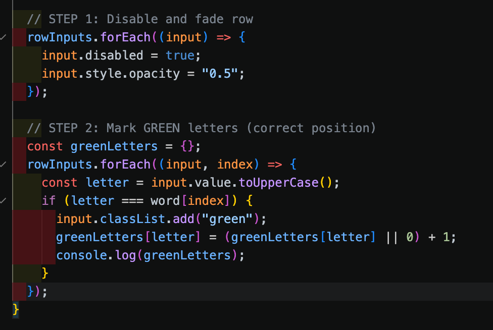
STAP 3: Alle letters in geheim woord tellen
Maakt een inventaris van alle beschikbare letters in het geheime woord
TEP 3: Count all letters in secret word
const availableLetters = {};
for (let i = 0; i < word.length; i++) {
const letter = word[i];
availableLetters[letter] = (availableLetters[letter] || 0) + 1;
}
Deze plaats je dan netjes onder stap 2.
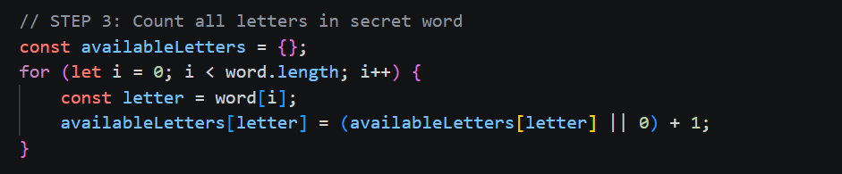
STAP 4: Groene letters van beschikbaarheid aftrekken
Omdat groene letters al "gebruikt" zijn, halen we ze uit de beschikbare pool
Dit voorkomt dubbel tellen (belangrijk!)
TEP 4: Remove greens from available pool (avoid double-counting)
for (let letter in greenLetters) {
availableLetters[letter] -= greenLetters[letter];
}
Deze plaats je dan netjes onder stap 3.
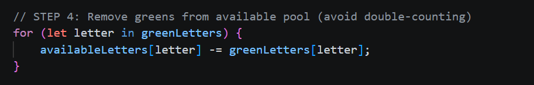
STAP 5: Oranje letters markeren 🟧
Voor letters die NIET groen zijn: controleert of ze nog beschikbaar zijn
Zo ja: markeert als orange (juiste letter, verkeerde plaats) en trekkt 1 van de
beschikbaarheid
af
Dit zorgt dat letters maximaal zoveel keer oranje worden gemarkeerd als ze voorkomen
TEP 5: Mark ORANGE letters (wrong position, but in word)
rowInputs.forEach((input, index) => {
const letter = input.value.toUpperCase();
if (input.classList.contains('green')) return; // Skip greens
// If letter still available, mark orange and use one instance
if (availableLetters[letter] && availableLetters[letter] > 0) {
input.classList.add('orange');
availableLetters[letter]--;
}
});
Deze plaats je dan netjes onder stap 4.
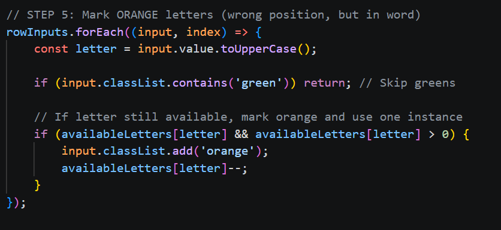
STAP 6: Win-check 🎉
Als alle letters in de rij groen zijn = GEWONNEN!
Schakelt alle inputs uit en toont het win-modal
ep 6: Check for win condition
if (Object.keys(greenLetters).length === word.length) {
inputs.forEach(input => {
input.disabled = true;
input.style.opacity = '0.5';
});
showWinModal(true);
}
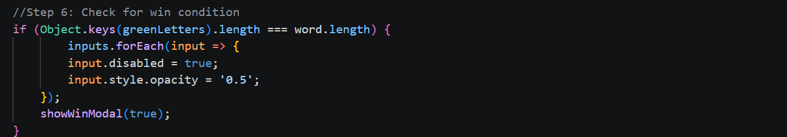
STAP 7: Verlies-check 😢
Als niet alle letters groen zijn én we bij het allerlaatste vakje van het bord zijn = VERLOREN!
Schakelt (net als bij winst) alle inputs uit en opent de modal, maar geeft nu 'false' mee zodat
het spel weet dat je niet gewonnen hebt.
TEP 7: Check for lose condition (all inputs filled but not all green + no more rows)
else if (Object.keys(greenLetters).length < word.length && endIndex === inputs.length) {
inputs.forEach(input => {
input.disabled = true;
input.style.opacity = '0.5';
});
showWinModal(false);
}
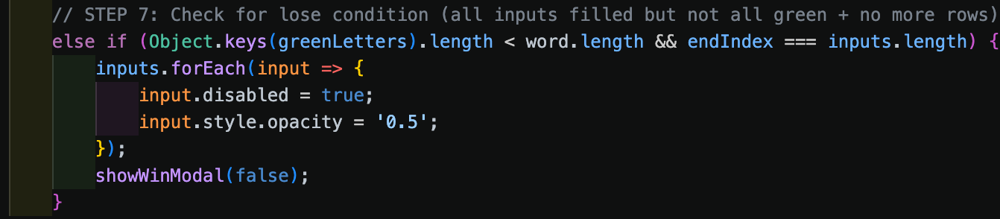
popup modal uitleg
als je een woord raadt, wordt het win-modal getoond. en als je alle trys hebt gebruikt, wordt het
verlies-modal getoond. (stap 6 & 7)
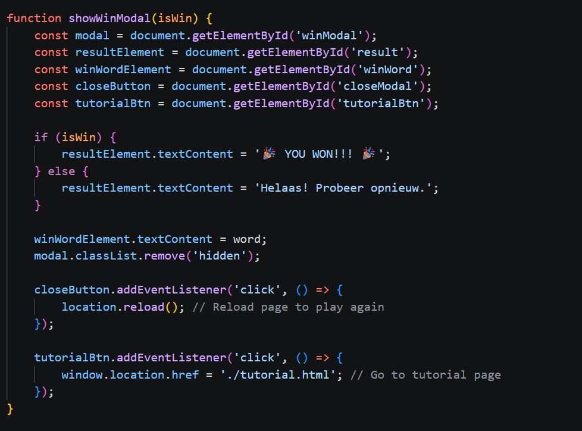
ion to show win/lose modal
function showWinModal(isWin) {
const modal = document.getElementById('winModal');
const resultElement = document.getElementById('result');
const winWordElement = document.getElementById('winWord');
const closeButton = document.getElementById('closeModal');
const tutorialBtn = document.getElementById('tutorialBtn');
if (isWin) {
resultElement.textContent = '🎉 YOU WON!!! 🎉';
} else {
resultElement.textContent = 'Helaas! Probeer opnieuw.';
}
winWordElement.textContent = word;
modal.classList.remove('hidden');
closeButton.addEventListener('click', () => {
location.reload(); // Reload page to play again
});
tutorialBtn.addEventListener('click', () => {
window.location.href = './tutorial.html'; // Go to tutorial page
});
}
Deze functie toont een pop-up aan het einde van het spel. Het pakt eerst alle knoppen en tekstvakken
uit de HTML, controleert of je hebt gewonnen of verloren en toont het juiste bericht met een emoji
('🎉 YOU WON!!!' als je wint, of 'Helaas! Probeer opnieuw.' als je verliest), plus het geheime woord
dat je moest raden. Daarna verwijdert het de hidden class zodat de pop-up zichtbaar wordt.
Tot slot voegt het twee klikfuncties toe: als je op de sluitknop klikt, wordt de pagina herladen
zodat je opnieuw kunt spelen; als je op de tutorial-knop klikt, ga je naar de tutorial pagina.
Kortom: het is het "game over"-scherm dat jou feliciteert of aanmoedigt om opnieuw te proberen.
we willen juist nog een woord kiezen voor het spel
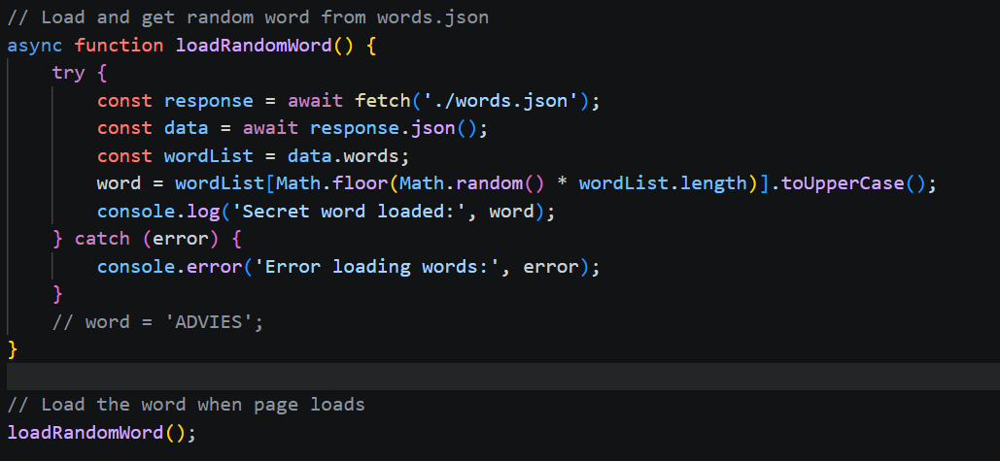
Deze functie kiest een willekeurig woord dat je moet raden. Hier's hoe het werkt:
Woorden-bestand ophalen - Maak hiervoor een bestand aan genaamd "words.json" en zet hier een lijst
van woorden in.
Data omzetten - Het zet de json data om naar JSON (een leesbaar formaat)
Woordenlijst pakken - Het haalt de array met alle woorden eruit (data.words)
Willekeurig woord kiezen - Met Math.random() kiest het een willekeurig getal en met Math.floor()
maakt het ervan een heel getal, zodat het een willekeurig woord uit de lijst kan selecteren
Woord in HOOFDLETTERS zetten - Met .toUpperCase() zet het het woord om naar alleen HOOFDLETTERS
ord = ''; // This will be replaced by a random word in a real game
// Load and get random word from words.json
async function loadRandomWord() {
try {
const response = await fetch('./words.json');
const data = await response.json();
const wordList = data.words;
word = wordList[Math.floor(Math.random() * wordList.length)].toUpperCase();
console.log('Secret word loaded:', word);
} catch (error) {
console.error('Error loading words:', error);
}
// word = 'ADVIES';
}
// Load the word when page loads
loadRandomWord();
Plak deze code bovenaan je game.js, onder de `const inputs` regel.
Stap 5B: Kleuren voor feedback (CSS)
Nu voegen we nog twee klasses toe voor de kleuren die tonen of je antwoord juist is. Deze CSS maken we in het
game.css bestand:
de reden dat we dit nu doen en niet eerder is omdat we de styling pas nodig hebben als we de feedback willen
tonen
Wat doen deze klasses? Deze styling bepaalt hoe het pop-up venster eruit
ziet:
.modal — Het hele scherm (achtergrond met zwarte overlay).
.modal.hidden — Verbergt het venster met
.modal-content — De witte box met de titel, tekst en knoppen.
.modal-button — De groene knop (normaal) en hover effect (als je er
overheen gaat).
.modal-button-secondary — De donkere knop (alternatief).
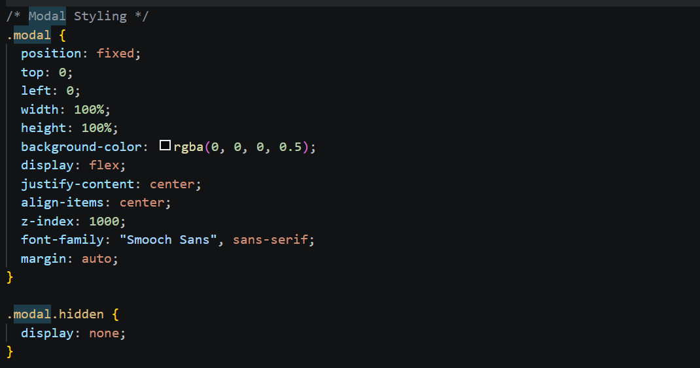
Let op: De afbeelding hierboven toont een preview van het modal, maar deze is
niet volledige. De code snippet hierboven bevat alle CSS die je nodig hebt!
Gefeliciteerd! 🎉
Je hebt nu alle stappen doorlopen om je eigen Wordle game te maken! Je hebt geleerd hoe je HTML gebruikt voor
de structuur, CSS voor de styling, en JavaScript voor de interactiviteit. Dit zijn de essentiële bouwstenen
van elke moderne website.
Wat je hebt geleerd:
HTML structuur opbouwen
Websites stylen met CSS
Interactieve elementen maken met JavaScript
Event listeners gebruiken
Logica implementeren voor spelregels
Volgende stap? Speel je eigen game en zie hoe alles samen werkt! Je kunt ook
experimenteren en aanpassingen maken om je game nog beter te maken.